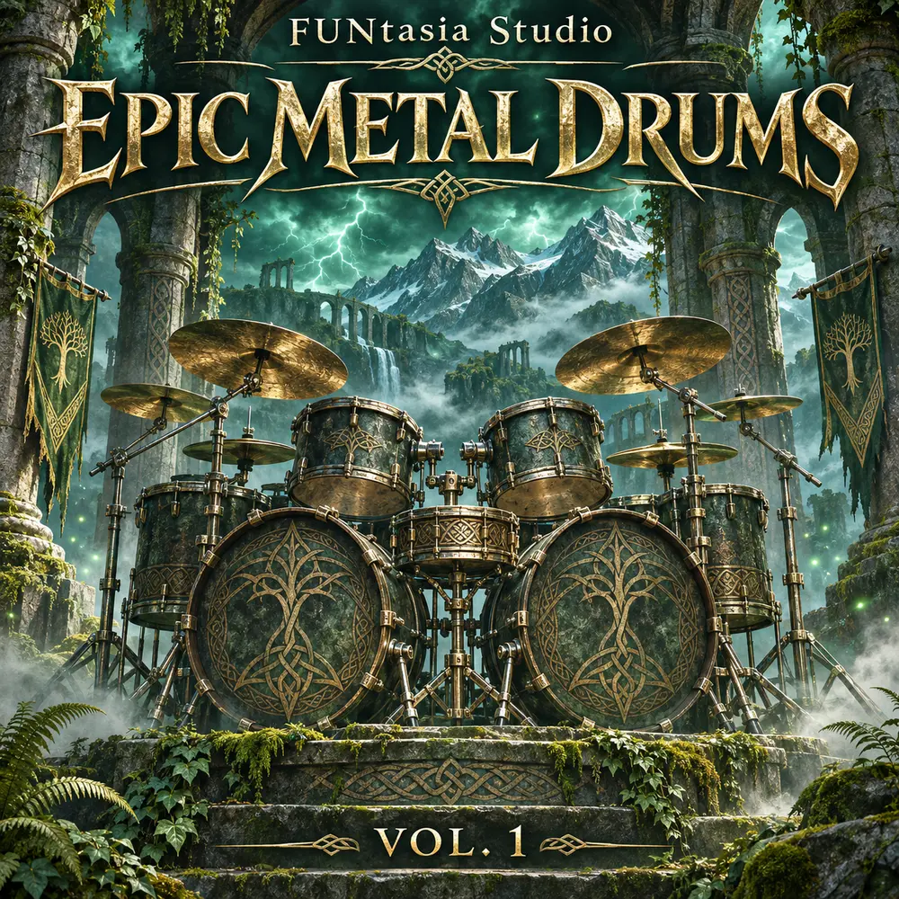

FEM01 / 無料 / VERSION 1.0.0
FUN Epic Metal Drums Vol. 1
フォークの疾走感から、シンフォニックな重厚さまで。
フォークメタル、マーチ、ツーバス、ブラストビート、シネマティックな展開を取り入れた128種類のオリジナルドラムMIDI。既存曲のコピーではなく、独立して作曲したフレーズ集です。
88Grooves
32Fills
4Intros
4Endings
- 全128フレーズ・拍子はすべて 4/4
- GMドラムマッピング完全準拠・MIDIチャンネル10
- SMF Type 0・960 PPQN・グリッド基準の演奏タイミング
- 参考テンポ 70〜240 BPM（ファイル名に記載）
- 8つのグルーヴ／フィルスタイル・グルーヴA/Bバリエーション
v1.0.0のパック本体は完成しています。公式の公開ダウンロード先が用意でき次第、ここから入手できるようにします。